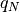

hyperspy.external.astroML package¶
Submodules¶
hyperspy.external.astroML.bayesian_blocks module¶
Bayesian Block implementation¶
Dynamic programming algorithm for finding the optimal adaptive-width histogram.
Based on Scargle et al 2012 [1]_
References
| [1] | http://adsabs.harvard.edu/abs/2012arXiv1207.5578S |
-
class
hyperspy.external.astroML.bayesian_blocks.Events(p0=0.05, gamma=None)¶ Bases:
hyperspy.external.astroML.bayesian_blocks.FitnessFuncFitness for binned or unbinned events
Parameters: - p0 (float) – False alarm probability, used to compute the prior on N (see eq. 21 of Scargle 2012). Default prior is for p0 = 0.
- gamma (float or None) – If specified, then use this gamma to compute the general prior form, p ~ gamma^N. If gamma is specified, p0 is ignored.
-
fitness(N_k, T_k)¶
-
prior(N, Ntot)¶
-
class
hyperspy.external.astroML.bayesian_blocks.FitnessFunc(p0=0.05, gamma=None)¶ Bases:
objectBase class for fitness functions
Each fitness function class has the following: - fitness(...) : compute fitness function.
Arguments accepted by fitness must be among [T_k, N_k, a_k, b_k, c_k]- prior(N, Ntot) : compute prior on N given a total number of points Ntot
-
args¶
-
fitness(**kwargs)¶
-
gamma_prior(N, Ntot)¶ Basic prior, parametrized by gamma (eq. 3 in Scargle 2012)
-
p0_prior(N, Ntot)¶
-
prior(N, Ntot)¶
-
validate_input(t, x, sigma)¶ Check that input is valid
-
class
hyperspy.external.astroML.bayesian_blocks.PointMeasures(p0=None, gamma=None)¶ Bases:
hyperspy.external.astroML.bayesian_blocks.FitnessFuncFitness for point measures
Parameters: gamma (float) – specifies the prior on the number of bins: p ~ gamma^N if gamma is not specified, then a prior based on simulations will be used (see sec 3.3 of Scargle 2012) -
fitness(a_k, b_k)¶
-
prior(N, Ntot)¶
-
-
class
hyperspy.external.astroML.bayesian_blocks.RegularEvents(dt, p0=0.05, gamma=None)¶ Bases:
hyperspy.external.astroML.bayesian_blocks.FitnessFuncFitness for regular events
This is for data which has a fundamental “tick” length, so that all measured values are multiples of this tick length. In each tick, there are either zero or one counts.
Parameters: - dt (float) – tick rate for data
- gamma (float) – specifies the prior on the number of bins: p ~ gamma^N
-
fitness(T_k, N_k)¶
-
validate_input(t, x, sigma)¶
-
hyperspy.external.astroML.bayesian_blocks.bayesian_blocks(t, x=None, sigma=None, fitness='events', **kwargs)¶ Bayesian Blocks Implementation
This is a flexible implementation of the Bayesian Blocks algorithm described in Scargle 2012 [1]_
Parameters: - t (array_like) – data times (one dimensional, length N)
- x (array_like (optional)) – data values
- sigma (array_like or float (optional)) – data errors
- fitness (str or object) –
the fitness function to use. If a string, the following options are supported:
- ‘events’ : binned or unbinned event data
- extra arguments are p0, which gives the false alarm probability to compute the prior, or gamma which gives the slope of the prior on the number of bins.
- ‘regular_events’ : non-overlapping events measured at multiples
- of a fundamental tick rate, dt, which must be specified as an additional argument. The prior can be specified through gamma, which gives the slope of the prior on the number of bins.
- ‘measures’ : fitness for a measured sequence with Gaussian errors
- The prior can be specified using gamma, which gives the slope of the prior on the number of bins. If gamma is not specified, then a simulation-derived prior will be used.
Alternatively, the fitness can be a user-specified object of type derived from the FitnessFunc class.
Returns: edges – array containing the (N+1) bin edges
Return type: ndarray
Examples
Event data:
>>> t = np.random.normal(size=100) >>> bins = bayesian_blocks(t, fitness='events', p0=0.01)
Event data with repeats:
>>> t = np.random.normal(size=100) >>> t[80:] = t[:20] >>> bins = bayesian_blocks(t, fitness='events', p0=0.01)
Regular event data:
>>> dt = 0.01 >>> t = dt * np.arange(1000) >>> x = np.zeros(len(t)) >>> x[np.random.randint(0, len(t), len(t) / 10)] = 1 >>> bins = bayesian_blocks(t, fitness='regular_events', dt=dt, gamma=0.9)
Measured point data with errors:
>>> t = 100 * np.random.random(100) >>> x = np.exp(-0.5 * (t - 50) ** 2) >>> sigma = 0.1 >>> x_obs = np.random.normal(x, sigma) >>> bins = bayesian_blocks(t, fitness='measures')
References
[1] Scargle, J et al. (2012) http://adsabs.harvard.edu/abs/2012arXiv1207.5578S See also
astroML.plotting.hist()- histogram plotting function which can make use of bayesian blocks.
hyperspy.external.astroML.histtools module¶
Tools for working with distributions
-
class
hyperspy.external.astroML.histtools.KnuthF(data)¶ Bases:
objectClass which implements the function minimized by knuth_bin_width
Parameters: data (array-like, one dimension) – data to be histogrammed Notes
the function F is given by

where
 is the Gamma function,
is the Gamma function,  is the number of
data points,
is the number of
data points,  is the number of measurements in bin
is the number of measurements in bin  .
.See also
knuth_bin_width,astroML.plotting.hist-
bins(M)¶ Return the bin edges given a width dx
-
eval(M)¶ Evaluate the Knuth function
Parameters: dx (float) – Width of bins Returns: F – evaluation of the negative Knuth likelihood function: smaller values indicate a better fit. Return type: float
-
-
hyperspy.external.astroML.histtools.dasky_freedman_bin_width(data, return_bins=True)¶ Dask version of freedman_bin_width
data : dask array return_bins : bool (optional)
if True, then return the bin edges- width : float
- optimal bin width using Scott’s rule
- bins : ndarray
- bin edges: returned if return_bins is True
The optimal bin width is .. math:
\Delta_b =
- rac{2(q_{75} - q_{25})}{n^{1/3}}
where  is the
 percent quartile of the data, and
is the number of data points.
percent quartile of the data, and
is the number of data points.knuth_bin_width scotts_bin_width astroML.plotting.hist
-
hyperspy.external.astroML.histtools.dasky_histogram(a, bins=10, **kwargs)¶ Enhanced histogram for dask arrays. The range keyword is ignored. Reads the data at most two times - once to determine best bins (if required), and second time to actually calculate the histogram.
Parameters: - a (array_like) – array of data to be histogrammed
- bins (int or list or str (optional)) – If bins is a string, then it must be one of: ‘scotts’ : use Scott’s rule to determine bins ‘freedman’ : use the Freedman-Diaconis rule to determine bins
- keyword arguments are described in numpy.hist() (other) –
Returns: - hist (array) – The values of the histogram. See normed and weights for a description of the possible semantics.
- bin_edges (array of dtype float) – Return the bin edges
(length(hist)+1).
See also
numpy.histogram(),astroML.plotting.hist()
-
hyperspy.external.astroML.histtools.dasky_scotts_bin_width(data, return_bins=True)¶ Dask version of scotts_bin_width
data : dask array return_bins : bool (optional)
if True, then return the bin edges- width : float
- optimal bin width using Scott’s rule
- bins : ndarray
- bin edges: returned if return_bins is True
The optimal bin width is .. math:
\Delta_b =
- rac{3.5sigma}{n^{1/3}}
where
 is the standard deviation of the data, and
is the number of data points.
is the standard deviation of the data, and
is the number of data points.knuth_bin_width freedman_bin_width astroML.plotting.hist
-
hyperspy.external.astroML.histtools.freedman_bin_width(data, return_bins=False)¶ Return the optimal histogram bin width using the Freedman-Diaconis rule
Parameters: - data (array-like, ndim=1) – observed (one-dimensional) data
- return_bins (bool (optional)) – if True, then return the bin edges
Returns: - width (float) – optimal bin width using Scott’s rule
- bins (ndarray) – bin edges: returned if return_bins is True
Notes
The optimal bin width is

where is the
percent quartile of the data, and
is the number of data points.See also
knuth_bin_width(),scotts_bin_width(),astroML.plotting.hist()
-
hyperspy.external.astroML.histtools.histogram(a, bins=10, range=None, **kwargs)¶ Enhanced histogram
This is a histogram function that enables the use of more sophisticated algorithms for determining bins. Aside from the bins argument allowing a string specified how bins are computed, the parameters are the same as numpy.histogram().
Parameters: - a (array_like) – array of data to be histogrammed
- bins (int or list or str (optional)) – If bins is a string, then it must be one of: ‘blocks’ : use bayesian blocks for dynamic bin widths ‘knuth’ : use Knuth’s rule to determine bins ‘scotts’ : use Scott’s rule to determine bins ‘freedman’ : use the Freedman-diaconis rule to determine bins
- range (tuple or None (optional)) – the minimum and maximum range for the histogram. If not specified, it will be (x.min(), x.max())
- keyword arguments are described in numpy.hist() (other) –
Returns: - hist (array) – The values of the histogram. See normed and weights for a description of the possible semantics.
- bin_edges (array of dtype float) – Return the bin edges
(length(hist)+1).
See also
numpy.histogram(),astroML.plotting.hist()
-
hyperspy.external.astroML.histtools.knuth_bin_width(data, return_bins=False)¶ Return the optimal histogram bin width using Knuth’s rule [1]_
Parameters: - data (array-like, ndim=1) – observed (one-dimensional) data
- return_bins (bool (optional)) – if True, then return the bin edges
Returns: - dx (float) – optimal bin width. Bins are measured starting at the first data point.
- bins (ndarray) – bin edges: returned if return_bins is True
Notes
The optimal number of bins is the value M which maximizes the function
where
is the Gamma function, is the number of
data points, is the number of measurements in bin .References
[1] Knuth, K.H. “Optimal Data-Based Binning for Histograms”. arXiv:0605197, 2006 See also
-
hyperspy.external.astroML.histtools.scotts_bin_width(data, return_bins=False)¶ Return the optimal histogram bin width using Scott’s rule:
Parameters: - data (array-like, ndim=1) – observed (one-dimensional) data
- return_bins (bool (optional)) – if True, then return the bin edges
Returns: - width (float) – optimal bin width using Scott’s rule
- bins (ndarray) – bin edges: returned if return_bins is True
Notes
The optimal bin width is

where
is the standard deviation of the data, and
is the number of data points.See also
knuth_bin_width(),freedman_bin_width(),astroML.plotting.hist()